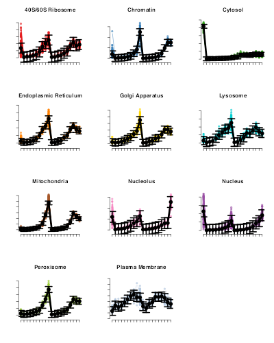
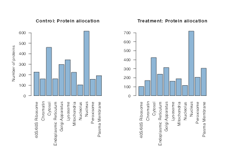
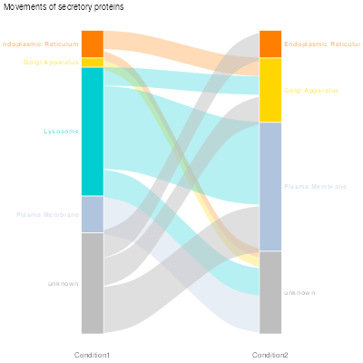
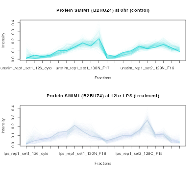
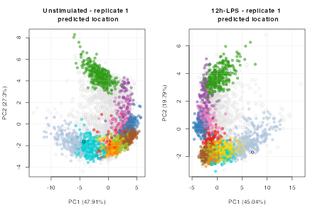

Vignette 2: A workflow for analysing differential localisation
Oliver M. Crook
Department of Statistics, University of Oxford, UKLisa M. Breckels
Cambridge Centre for Proteomics, University of Cambridge, UKSource:
vignettes/v02-workflow.Rmd
v02-workflow.RmdAbstract
This vignette describes how to analyse mass-spectrometry based differential localisation experiments using the BANDLE method (Crook et al. 2021). Data should be stored as lists of MSnSets. There is also features for quality control and visualisation of results. Please see other vignettes for convergence and other methodology.
# options(width = 150)
library("bandle")
library("ggplot2")
library("pRoloc")
library("MSnbase")
library("pheatmap")
library("viridis")
library("dplyr")
setStockcol(NULL)
setStockcol(paste0(getStockcol(),"90")) # make colours transparentIntroduction
In this vignette we use a real-life biological use-case to demonstrate how to analyse mass-spectrometry based proteomics data using the Bayesian ANalysis of Differential Localisation Experiments (BANDLE) method.
The data
As mentioned in “Vignette 1: Getting Started with BANDLE” data from mass spectrometry based proteomics methods most commonly yield a matrix of measurements where we have proteins/peptides/peptide spectrum matches (PSMs) along the rows, and samples/fractions along the columns. To use bandle the data must be stored as a MSnSet, as implemented in the Bioconductor MSnbase package. Please see the relevant vignettes in MSnbase for constructing these data containers.
The data used in this vignette has been published in Claire M. Mulvey et al. (2021) and is currently stored as MSnSet instances in the the pRolocdata package. We will load it in the next section.
Spatialtemporal proteomic profiling of a THP-1 cell line
In this workflow we analyse the data produced by Claire M. Mulvey et al. (2021). In this experiment triplicate hyperLOPIT experiments (Claire M. Mulvey et al. 2017) were conducted on THP-1 human leukaemia cells where the samples were analysed and collected (1) when cells were unstimulated and then (2) following 12 hours stimulation with LPS (12h-LPS).
In the following code chunk we load 4 of the datasets from the study: 2 replicates of the unstimulated and 2 replicates of the 12h-LPS stimulated samples. Please note to adhere to Bioconductor vignette build times we only load 2 of the 3 replicates for each condition to demonstrate the BANDLE workflow.
##
## This is pRolocdata version 1.33.1.
## Use 'pRolocdata()' to list available data sets.
data("thpLOPIT_unstimulated_rep1_mulvey2021")
data("thpLOPIT_unstimulated_rep3_mulvey2021")
data("thpLOPIT_lps_rep1_mulvey2021")
data("thpLOPIT_lps_rep3_mulvey2021")By typing the names of the datasets we get a MSnSet data summary. For example,
thpLOPIT_unstimulated_rep1_mulvey2021## MSnSet (storageMode: lockedEnvironment)
## assayData: 5107 features, 20 samples
## element names: exprs
## protocolData: none
## phenoData
## sampleNames: unstim_rep1_set1_126_cyto unstim_rep1_set1_127N_F1.4 ...
## unstim_rep1_set2_131_F24 (20 total)
## varLabels: Tag Treatment ... Fraction (5 total)
## varMetadata: labelDescription
## featureData
## featureNames: A0AVT1 A0FGR8-2 ... Q9Y6Y8 (5107 total)
## fvarLabels: Checked_unst.r1.s1 Confidence_unst.r1.s1 ... markers (107
## total)
## fvarMetadata: labelDescription
## experimentData: use 'experimentData(object)'
## Annotation:
## - - - Processing information - - -
## Loaded on Tue Jan 12 14:46:48 2021.
## Normalised to sum of intensities.
## MSnbase version: 2.14.2
thpLOPIT_lps_rep1_mulvey2021## MSnSet (storageMode: lockedEnvironment)
## assayData: 4879 features, 20 samples
## element names: exprs
## protocolData: none
## phenoData
## sampleNames: lps_rep1_set1_126_cyto lps_rep1_set1_127N_F1.4 ...
## lps_rep1_set2_131_F25 (20 total)
## varLabels: Tag Treatment ... Fraction (5 total)
## varMetadata: labelDescription
## featureData
## featureNames: A0A0B4J2F0 A0AVT1 ... Q9Y6Y8 (4879 total)
## fvarLabels: Checked_lps.r1.s1 Confidence_lps.r1.s1 ... markers (107
## total)
## fvarMetadata: labelDescription
## experimentData: use 'experimentData(object)'
## Annotation:
## - - - Processing information - - -
## Loaded on Tue Jan 12 14:46:57 2021.
## Normalised to sum of intensities.
## MSnbase version: 2.14.2We see that the datasets thpLOPIT_unstimulated_rep1_mulvey2021 and thpLOPIT_lps_rep1_mulvey2021 contain 5107 and 4879 proteins respectively, across 20 TMT channels. The data is accessed through different slots of the MSnSet (see str(thpLOPIT_unstimulated_rep1_mulvey2021) for all available slots). The 3 main slots which are used most frequently are those that contain the quantitation data, the features i.e. PSM/peptide/protein information and the sample information, and these can be accessed using the functions exprs, fData, and pData, respectively.
Preparing the data
To run bandle there are a few minimal requirements that the data must fulfill. Data are required to have:
- the same number of channels across conditions and replicates
- the same proteins across conditions and replicates
- data must be a
listofMSnSetinstances
If we use the dim function we see that the datasets we have loaded have the same number of channels but a different number of proteins per experiment.
dim(thpLOPIT_unstimulated_rep1_mulvey2021)## [1] 5107 20
dim(thpLOPIT_unstimulated_rep3_mulvey2021)## [1] 5733 20
dim(thpLOPIT_lps_rep1_mulvey2021)## [1] 4879 20
dim(thpLOPIT_lps_rep3_mulvey2021)## [1] 5848 20We use the function commonFeatureNames to extract proteins that are common across all replicates. This function has a nice side effect which is that it also wraps the data into a list, ready for input into bandle.
thplopit <- commonFeatureNames(c(thpLOPIT_unstimulated_rep1_mulvey2021, ## unstimulated rep
thpLOPIT_unstimulated_rep3_mulvey2021, ## unstimulated rep
thpLOPIT_lps_rep1_mulvey2021, ## 12h-LPS rep
thpLOPIT_lps_rep3_mulvey2021)) ## 12h-LPS rep## 3727 features in commonWe now have our list of MSnSets ready for bandle with 3727 proteins common across all 4 replicates/conditions.
thplopit## Instance of class 'MSnSetList' containig 4 objects.We can visualise the data using the plot2D function from pRoloc
## create a character vector of title names for the plots
plot_id <- c("Unstimulated 1st rep", "Unstimulated 2nd rep",
"12h-LPS 1st rep", "12h-LPS 2nd rep")
## plot the data
par(mfrow = c(2,2))
for (i in seq(thplopit))
plot2D(thplopit[[i]], main = plot_id[i])
addLegend(thplopit[[4]], where = "topleft", cex = .75)By default the plot2D uses principal components analysis (PCA) for the data transformation. Other options such as t-SNE, kernal PCA etc. are also available, see ?plot2D and the method argument. PCA sometimes will randomly flip the axis, because the eigenvectors only need to satisfy \(||v|| = 1\), which allows a sign flip. You will notice this is the case for the 3rd plot. If desired you can flip the axis/change the sign of the PCs by specifying any of the arguments mirrorX, mirrorY, axsSwitch to TRUE when you call plot2D.
Preparing bandle: fitting GPs and setting the priors
As mentioned in the first vignette, bandle uses a complex model to analyse the data. Markov-Chain Monte-Carlo (MCMC) is used to sample the posterior distribution of parameters and latent variables from which statistics of interest can be computed. Again, here we only run a few iterations for brevity but typically one needs to run thousands of iterations to ensure convergence, as well as multiple parallel chains.
Fitting Gaussian processes
First, we need to fit non-parametric regression functions to the markers profiles. We use the fitGPmaternPC function using the default penalised complexity priors (see ?fitGP), which work well.
gpParams <- lapply(thplopit, function(x) fitGPmaternPC(x))We apply the fitGPmaternPC function on to each dataset by using lapply over the thplopit list of data. The posterior predictive means, standard deviations and MAP hyperparamters for the GP are returned. If desired we can visualise the predictives overlaid onto the marker profiles of the data by using the plotGPmatern function.
The prior needs to form a K*3 matrix (where K is the number of subcellular classes in the data),
(mrkCl <- getMarkerClasses(thplopit[[1]], fcol = "markers"))## [1] "40S/60S Ribosome" "Chromatin" "Cytosol"
## [4] "Endoplasmic Reticulum" "Golgi Apparatus" "Lysosome"
## [7] "Mitochondria" "Nucleolus" "Nucleus"
## [10] "Peroxisome" "Plasma Membrane"So for this data we require a 11*3 matrix. Three columns are needed, one for the prior, one for length-scale amplitude and finally one for the standard deviation parameters (see hyppar in ?fitGP). For more details see the manuscript by Crook et al. (2021).
K <- length(mrkCl)
pc_prior <- matrix(NA, ncol = 3, K)
pc_prior[seq.int(1:K), ] <- matrix(rep(c(10, 60, 250),
each = K), ncol = 3)
head(pc_prior)## [,1] [,2] [,3]
## [1,] 10 60 250
## [2,] 10 60 250
## [3,] 10 60 250
## [4,] 10 60 250
## [5,] 10 60 250
## [6,] 10 60 250Now we have generated these complexity priors we can pass them as an argument to the fitGPmaternPC function. For example,
gpParams <- lapply(thplopit,
function(x) fitGPmaternPC(x, hyppar = pc_prior))By plotting the predictives using the plotGPmatern function we see that the distributions and fit looks sensible for each class so we will proceed with setting the prior on the weights.
par(mfrow = c(4, 3))
plotGPmatern(thplopit[[1]], gpParams[[1]])
For the interest of keeping the vignette size small, in the above chunk we plot only the first dataset and its respective predictive. To plot the second dataset we would execute plotGPmatern(thplopit[[i]], gpParams[[i]]) where i = 2, and similarly for the third i = 3 and so on.
Setting the prior on the weights
The next step is to set up the matrix Dirichlet prior on the mixing weights. If dirPrior = NULL a default Dirichlet prior is computed see ?bandle. We strongly advise you to set your own prior. In “Vignette 1: Getting Started with BANDLE” we give some suggestions on how to set this and in the below code we try a few different priors and assess the expectations.
As per Vignette 1, let’s try a dirPrior as follows,
set.seed(1)
dirPrior = diag(rep(1, K)) + matrix(0.001, nrow = K, ncol = K)
predDirPrior <- prior_pred_dir(object = thplopit[[1]],
dirPrior = dirPrior,
q = 15)The mean number of relocalisations is
predDirPrior$meannotAlloc## [1] 0.421633The prior probability that more than q differential localisations are expected is
predDirPrior$tailnotAlloc## [1] 0.0016
hist(predDirPrior$priornotAlloc, col = getStockcol()[1])We see that the prior probability that proteins are allocated to different components between datasets concentrates around 0. This is what we expect, we expect subtle changes between conditions for this data. We may perhaps wish to be a little stricter with the number of differential localisations output by bandle and in this case we could make the off-diagonal elements of the dirPrior smaller. In the below code chunk we test 0.0005 instead of 0.001, which reduces the number of re-localisations.
set.seed(1)
dirPrior = diag(rep(1, K)) + matrix(0.0005, nrow = K, ncol = K)
predDirPrior <- prior_pred_dir(object = thplopit[[1]],
dirPrior = dirPrior,
q = 15)
predDirPrior$meannotAlloc## [1] 0.2308647
predDirPrior$tailnotAlloc## [1] 6e-04
hist(predDirPrior$priornotAlloc, col = getStockcol()[1])Again, we see that the prior probability that proteins are allocated to different components between datasets concentrates around 0.
The bandle function
Now we have computed our gpParams and pcPriors we can run the main bandle function.
Here for convenience of building the vignette we only run 2 of the triplicates for each condition and run the bandle function for a small number of iterations to minimise the vignette build-time. Typically we’d recommend you run the number of iterations (numIter) in the \(1000\)s.
We first subset our data into two objects called control and treatment which we subsequently pass to bandle along with our priors.
control <- list(thplopit[[1]], thplopit[[2]])
treatment <- list(thplopit[[3]], thplopit[[4]])
bandleres <- bandle(objectCond1 = control,
objectCond2 = treatment,
numIter = 50, # usually 10,000
burnin = 5L, # usually 5,000
thin = 1L, # usually 20
gpParams = gpParams,
pcPrior = pc_prior,
numChains = 1, # usually >=4
dirPrior = dirPrior,
seed = 1)A bandleParams object is produced
bandleres## Object of class "bandleParams"
## Method: bandle
## Number of chains: 1Processing and analysing the bandle results
Following Vignette 1 we populate the bandleres object by calling the bandleProcess function. This may take a few seconds to process.
bandleres <- bandleProcess(bandleres)These slots have now been populated
## Length Class Mode
## [1,] 1 bandleSummary S4
## [2,] 1 bandleSummary S4The posteriorEstimates slot gives posterior quantities of interest for different proteins. The object is of length 2, - 1 slot for control - 1 slot for treatment
## [1] 2We explicitly extract the posterior estimates and protein allocation predictions as follows
pe1 <- posteriorEstimates(summaries(bandleres)[[1]])
pe2 <- posteriorEstimates(summaries(bandleres)[[2]])
head(pe1)## DataFrame with 6 rows and 7 columns
## bandle.allocation bandle.probability bandle.outlier
## <character> <numeric> <numeric>
## A0AVT1 Cytosol 1.000000 0
## A0FGR8-2 Golgi Apparatus 0.977121 0
## A0JNW5 Nucleus 1.000000 1
## A0MZ66-3 Cytosol 1.000000 0
## A0PJW6 Peroxisome 1.000000 0
## A1L0T0 Endoplasmic Reticulum 0.999999 0
## bandle.probability.lowerquantile bandle.probability.upperquantile
## <numeric> <numeric>
## A0AVT1 1.000000 1.00000
## A0FGR8-2 0.932814 0.99877
## A0JNW5 1.000000 1.00000
## A0MZ66-3 1.000000 1.00000
## A0PJW6 1.000000 1.00000
## A1L0T0 0.999993 1.00000
## bandle.mean.shannon bandle.differential.localisation
## <numeric> <numeric>
## A0AVT1 0.00000e+00 0.000000
## A0FGR8-2 0.00000e+00 0.977778
## A0JNW5 4.20584e-09 0.000000
## A0MZ66-3 0.00000e+00 0.000000
## A0PJW6 0.00000e+00 0.822222
## A1L0T0 0.00000e+00 0.000000The full joint probability distribution can be found in the bandle.joint slot e.g. for the control in slot 1 this would be bandleJoint(summaries(bandleres)[[1]]) and the treatment in slot 2 this would be bandleJoint(summaries(bandleres)[[2]]).
Let’s look at the posterior estimates and allocation predictions found in pe1 and pe2. Each object is a data.frame containing the protein allocations and associated localisation probabilities for each condition. The 7 columns are
-
bandle.allocationwhich contains the the localisation predictions to one of the subcellular classes that appear in the training data. -
bandle.probabilityis the allocation probability, corresponding to the mean of the distribution probability. -
bandle.outlieris the probability of being an outlier. A high value indicates that the protein is unlikely to belong to any annotated class (and is hence considered an outlier). -
bandle.probability.lowerquantileandbandle.probability.upperquantileare the upper and lower quantiles of the allocation probability distribution. -
bandle.mean.shannonis the Shannon entropy, measuring the uncertainty in the allocations (a high value representing high uncertainty; the highest value is the natural logarithm of the number of classes). -
bandle.differential.localisationis the differential localisation probability.
We plot the distribution of protein allocations by bandle
par(mfrow = c(1, 2), oma = c(6, 2, 2, 2))
barplot(table(pe1$bandle.allocation), col = getStockcol()[2],
las = 2, main = "Control: Protein allocation",
ylab = "Number of proteins")
barplot(table(pe2$bandle.allocation), col = getStockcol()[2],
las = 2, main = "Treatment: Protein allocation")
The bar plot above tells us for this data bandle has allocated the majority of unlabelled proteins to the nucleus. The allocation result for each condition (found in bandle.allocation) is determined by bandle by looking at which subcellular niche was given the highest probability from the full distribution e.g. from bandle.joint. If we plot the bandle.probability (corresponding to the mean of the distribution) against the protein allocation results we can see that not all protein allocations are confident, this is why it is important to threshold when deducing a protein’s location.
par(mfrow = c(1, 2), oma = c(6, 2, 2, 2))
boxplot(pe1$bandle.probability ~ pe1$ bandle.allocation,
col = getStockcol()[2], xlab = "",
ylab = "BANDLE probability (mean)",
las = 2, main = "Control: Probability distribution\n by allocation class")
boxplot(pe2$bandle.probability ~ pe1$ bandle.allocation,
col = getStockcol()[2], xlab = "", ylab = "",
las = 2, main = "Treatment: Probability distribution\n by allocation class")Predicting subcellular location
As mentioned in Vignette 1, it is common to threshold allocation results based on the posterior probability. Proteins that do not meet the threshold are not assigned to a subcellular location and left unlabelled (here we use the terminology “unknown” for consistency with the pRoloc package). It is important not to force proteins to allocate to one of the niches defined here in the training data, if they have low probability to reside there. We wish to allow for greater subcellular diversity and to have multiple location, this is captured essentially in leaving a protein “unlabelled” or “unknown”.
We use the bandlePredict function to append our results to the original MSnSet datasets.
## Add the bandle results to a MSnSet
xx <- bandlePredict(control,
treatment,
params = bandleres,
fcol = "markers")
res_0h <- xx[[1]]
res_12h <- xx[[2]]The BANDLE model combines replicate information within each condition to obtain the localisation of proteins for each single experimental condition.
The results for each condition are appended to the first dataset in the list of MSnSets (for each condition). It is important to familiarise yourself with the MSnSet data structure. To further highlight this in the below code chunk we look at the fvarLabels of each datasets, this shows the column header names of the fData feature data. We see that the first replicate at 0h e.g. res_0h[[1]] has 7 columns with the output of bandle e.g. bandle.probability, bandle.allocation, bandle.outlier etc. (as described above) appended to the feature data (fData(res_0h[[1]])). The second dataset at 0h i.e. res_0h[[2]] does not have this information appended to the feature data. This is the same for the second condition at 12h post LPS stimulation.
fvarLabels(res_0h[[1]])
fvarLabels(res_0h[[2]])
fvarLabels(res_12h[[1]])
fvarLabels(res_12h[[2]])To obtain classification results we threshold using a 1% FDR based on the bandle.probability and append the results to the data using the getPredictions function from MSnbase.
## threshold results using 1% FDR
res_0h[[1]] <- getPredictions(res_0h[[1]],
fcol = "bandle.allocation",
scol = "bandle.probability",
mcol = "markers",
t = .99)## ans
## 40S/60S Ribosome Chromatin Cytosol
## 277 209 510
## Endoplasmic Reticulum Golgi Apparatus Lysosome
## 165 206 282
## Mitochondria Nucleolus Nucleus
## 398 110 653
## Peroxisome Plasma Membrane unknown
## 163 251 503
res_12h[[1]] <- getPredictions(res_12h[[1]],
fcol = "bandle.allocation",
scol = "bandle.probability",
mcol = "markers",
t = .99)## ans
## 40S/60S Ribosome Chromatin Cytosol
## 144 229 443
## Endoplasmic Reticulum Golgi Apparatus Lysosome
## 283 296 197
## Mitochondria Nucleolus Nucleus
## 361 126 768
## Peroxisome Plasma Membrane unknown
## 202 363 315A table of predictions is printed as a side effect when running getPredictions function.
In addition to thresholding on the bandle.probability we can threshold based on the bandle.outlier i.e. the probability of being an outlier. A high value indicates that the protein is unlikely to belong to any annotated class (and is hence considered an outlier). We wish to assign proteins to a subcellular niche if they have a high bandle.probability and also a low bandle.outlier probability. This is a nice way to ensure we keep the most high confidence localisations.
In the below code chunk we use first create a new column called bandle.outlier.t in the feature data which is 1 - outlier probability. This allows us then to use getPredictions once again and keep only proteins which meet both the 0.99 threshold on the bandle.probability and the bandle.outlier.
Note, that running getPredictions appends the results to a new feature data column called fcol.pred, please see ?getPredictions for the documentation. As we have run this function twice, our column of classification results are found in bandle.allocation.pred.pred.
## add outlier probability
fData(res_0h[[1]])$bandle.outlier.t <- 1 - fData(res_0h[[1]])$bandle.outlier
fData(res_12h[[1]])$bandle.outlier.t <- 1 - fData(res_12h[[1]])$bandle.outlier
## threshold again, now on the outlier probability
res_0h[[1]] <- getPredictions(res_0h[[1]],
fcol = "bandle.allocation.pred",
scol = "bandle.outlier.t",
mcol = "markers",
t = .99)## ans
## 40S/60S Ribosome Chromatin Cytosol
## 87 143 332
## Endoplasmic Reticulum Golgi Apparatus Lysosome
## 162 107 225
## Mitochondria Nucleolus Nucleus
## 356 61 103
## Peroxisome Plasma Membrane unknown
## 134 223 1794
res_12h[[1]] <- getPredictions(res_12h[[1]],
fcol = "bandle.allocation.pred",
scol = "bandle.outlier.t",
mcol = "markers",
t = .99)## ans
## 40S/60S Ribosome Chromatin Cytosol
## 110 175 277
## Endoplasmic Reticulum Golgi Apparatus Lysosome
## 249 219 162
## Mitochondria Nucleolus Nucleus
## 346 99 133
## Peroxisome Plasma Membrane unknown
## 183 307 1467Let’s append the results to the second replicate (by default they are appended to the first only, as already mentioned above). This allows us to plot each dataset and the results using plot2D.
## Add results to second replicate at 0h
res_alloc_0hr <- fData(res_0h[[1]])$bandle.allocation.pred.pred
fData(res_0h[[2]])$bandle.allocation.pred.pred <- res_alloc_0hr
## Add results to second replicate at 12h
res_alloc_12hr <- fData(res_12h[[1]])$bandle.allocation.pred.pred
fData(res_12h[[2]])$bandle.allocation.pred.pred <- res_alloc_12hrWe can plot these results on a PCA plot and compare to the original subcellular markers.
par(mfrow = c(5, 2))
plot2D(res_0h[[1]], main = "Unstimulated - replicate 1 \n subcellular markers",
fcol = "markers")
plot2D(res_0h[[1]], main = "Unstimulated - replicate 1 \nprotein allocations (1% FDR)",
fcol = "bandle.allocation.pred.pred")
plot2D(res_0h[[2]], main = "Unstimulated - replicate 2 \nsubcellular markers",
fcol = "markers")
plot2D(res_0h[[2]], main = "Unstimulated - replicate 2 \nprotein allocations (1% FDR)",
fcol = "bandle.allocation.pred.pred")
plot2D(res_0h[[1]], main = "12h LPS - replicate 1 \nsubcellular markers",
fcol = "markers")
plot2D(res_0h[[1]], main = "12h LPS - replicate 1 \nprotein allocations (1% FDR)",
fcol = "bandle.allocation.pred.pred")
plot2D(res_0h[[2]], main = "12h LPS - replicate 2 \nsubcellular markers",
fcol = "markers")
plot2D(res_0h[[2]], main = "12h LPS - replicate 2 \nprotein allocations (1% FDR)",
fcol = "bandle.allocation.pred.pred")
plot(NULL, xaxt='n',yaxt='n',bty='n',ylab='',xlab='', xlim=0:1, ylim=0:1)
addLegend(res_0h[[1]], where = "topleft", cex = .8)Differential localisation
The differential localisation probability tells us which proteins are most likely to differentially localise, that exhibit a change in their steady-state subcellular location. Quantifying changes in protein subcellular location between experimental conditions is challenging and Crook et al (Crook et al. 2021) have used a Bayesian approach to compute the probability that a protein differentially localises upon cellular perturbation, as well quantifying the uncertainty in these estimates. The differential localisation probability is found in the bandle.differential.localisation column of the bandleParams output.
diffloc_probs <- pe1$bandle.differential.localisationIf we take a 5% FDR and examine how many proteins get a differential probability greater than 0.95 we find there are 679 proteins above this threshold.
## [1] 747On a rank plot we can see the distribution of differential probabilities.
plot(diffloc_probs[order(diffloc_probs, decreasing = TRUE)],
col = getStockcol()[2], pch = 19, ylab = "Probability",
xlab = "Rank", main = "Differential localisation rank plot")This indicated that most proteins are not differentially localised and there are a few hundred confident differentially localised proteins of interest.
Estimating uncertainty
One advantage of using Bayesian methods over classic machine learning is the ability to quantify the uncertainty in our estimates. There are many ways to do this, as discussed in “Vignette 1: Getting Started with BANDLE”. In the below code chunk we use the binomialDiffLocProb function to obtain credible intervals from the binomial distribution and then extract a probability estimate for the differential localisation.
Please note, that in interest of time and for the purpose of demonstration we set nsample = 500 and thus only return 500 samples of the binomial distribution. In practice the minimum recommended number of samples is 5000.
set.seed(1)
bin_t <- binomialDiffLocProb(params = bandleres, top = 500,
nsample = 500, decreasing = TRUE)As we have a large number of proteins as candidates we have chosen to threshold on the interval to reduce the number of differential localisations.
This leaves us with 147 proteins to investigate.
## [1] "A1L170-2" "B7ZBB8" "O15479" "O43427" "O43464" "O43670-4"Add the results to the MSnSet
Let’s add the results to each replicate in the MSnSets. The reason for doing this is so that later on when we wish to visulalise the data we have the information readily accessible to make use of the functions in the pRoloc package.
Let’s double check all datasets have the same proteins,
all(featureNames(res_0h[[1]]) == featureNames(res_0h[[2]]))## [1] TRUE
all(featureNames(res_0h[[1]]) == featureNames(res_12h[[1]]))## [1] TRUE
all(featureNames(res_12h[[1]]) == featureNames(res_12h[[2]]))## [1] TRUENow let’s add the differential location estimates,
dl.estimate <- qt[candidates]
fn <- featureNames(control[[1]])
cmn <- fn %in% names(dl.estimate)
## Add results to the 0h time-point (control)
for (i in seq(res_0h)) {
## create column called "dl.estimate" in the data
mcol <- "dl.estimate"
fData(res_0h[[i]])[, mcol] <- NA
fData(res_0h[[i]])[cmn, mcol] <- dl.estimate
## create column called "dl.candidate" in the data
mcol <- "dl.candidate"
fData(res_0h[[i]])[, mcol] <- "unknown"
fData(res_0h[[i]])[cmn, mcol] <- "DL candidate"
}
## Add results to the 12h time-point (treatment)
for (i in seq(res_12h)) {
## create column called "dl.estimate" in the data
mcol <- "dl.estimate"
fData(res_12h[[i]])[, mcol] <- NA
fData(res_12h[[i]])[cmn, mcol] <- dl.estimate
## create column called "dl.candidate" in the data
mcol <- "dl.candidate"
fData(res_12h[[i]])[, mcol] <- "unknown"
fData(res_12h[[i]])[cmn, mcol] <- "DL candidate"
}In the next section we can visualise these results.
Visualising differential localisation
There are several different ways we can visualise the output of bandle. Now we have our set of candidates we can subset MSnSet datasets and plot the the results.
To subset the data,
msnset_cands <- list(res_0h[[1]][candidates, ],
res_12h[[1]][candidates, ])We can visualise this as a data.frame too for ease,
# construct data.frame
df_cands <- data.frame(
fData(msnset_cands[[1]])[, c("dl.estimate", "bandle.allocation.pred.pred")],
fData(msnset_cands[[2]])[, "bandle.allocation.pred.pred"])
colnames(df_cands) <- c("dl.estimate", "0hr_location", "12h_location")
# order by highest differential localisation estimate
df_cands <- df_cands %>% arrange(desc(dl.estimate))
head(df_cands)## dl.estimate 0hr_location 12h_location
## P46379-3 0.9584272 unknown unknown
## Q8WWI1-3 0.9576311 unknown unknown
## Q8WVX3-2 0.9572997 unknown unknown
## Q14165 0.9572947 unknown Endoplasmic Reticulum
## Q96QD8 0.9570807 Lysosome Plasma Membrane
## Q7L592 0.9569022 Mitochondria PeroxisomeAlluvial plots
We can now plot this on an alluvial plot to view the changes in subcellular location. The class label is taken from the column called "bandle.allocation.pred.pred" which was deduced above by thresholding on the posterior and outlier probabilities before assigning BANDLE’s allocation prediction.
## set colours for organelles and unknown
cols <- c(getStockcol()[seq(mrkCl)], "grey")
names(cols) <- c(mrkCl, "unknown")
## plot
alluvial <- plotTranslocations(msnset_cands,
fcol = "bandle.allocation.pred.pred",
col = cols)## 147 features in common## ------------------------------------------------
## If length(fcol) == 1 it is assumed that the
## same fcol is to be used for both datasets
## setting fcol = c(bandle.allocation.pred.pred,bandle.allocation.pred.pred)
## ----------------------------------------------
alluvial + ggtitle("Differential localisations following 12h-LPS stimulation")## Warning: `spread_()` was deprecated in tidyr 1.2.0.
## Please use `spread()` instead.
## This warning is displayed once every 8 hours.
## Call `lifecycle::last_lifecycle_warnings()` to see where this warning was generated.## Warning: The `.dots` argument of `group_by()` is deprecated as of dplyr 1.0.0.
## This warning is displayed once every 8 hours.
## Call `lifecycle::last_lifecycle_warnings()` to see where this warning was generated.
To view a table of the translocations, we can call the function plotTable,
(tbl <- plotTable(msnset_cands, fcol = "bandle.allocation.pred.pred"))## 147 features in common## ------------------------------------------------
## If length(fcol) == 1 it is assumed that the
## same fcol is to be used for both datasets
## setting fcol = c(bandle.allocation.pred.pred, bandle.allocation.pred.pred)
## ----------------------------------------------## Condition1 Condition2 value
## 7 Chromatin Peroxisome 1
## 19 Cytosol unknown 4
## 23 Endoplasmic Reticulum Golgi Apparatus 4
## 33 Golgi Apparatus Endoplasmic Reticulum 2
## 39 Golgi Apparatus unknown 1
## 44 Lysosome Golgi Apparatus 5
## 48 Lysosome Plasma Membrane 12
## 57 Mitochondria Peroxisome 8
## 59 Mitochondria unknown 4
## 69 Nucleolus unknown 1
## 76 Peroxisome Mitochondria 5
## 79 Peroxisome unknown 2
## 85 Plasma Membrane Lysosome 1
## 89 Plasma Membrane unknown 3
## 91 unknown Chromatin 2
## 92 unknown Cytosol 1
## 93 unknown Endoplasmic Reticulum 9
## 94 unknown Golgi Apparatus 1
## 95 unknown Lysosome 1
## 97 unknown Nucleolus 5
## 98 unknown Peroxisome 9
## 99 unknown Plasma Membrane 6
## 100 unknown 40S/60S Ribosome 2Although this example analysis is limited compared to that of Claire M. Mulvey et al. (2021), we do see similar trends inline with the results seen in the paper. For examples, we see a large number of proteins translocating between organelles that are involved in the secretory pathway. We can further examine these cases by subsetting the datasets once again and only plotting proteins that involve localisation with these organelles. Several organelles are known to be involved in this pathway, the main ones, the ER, Golgi (and plasma membrane).
Let’s subset for these proteins,
secretory_prots <- unlist(lapply(msnset_cands, function(z)
c(which(fData(z)$bandle.allocation.pred.pred == "Golgi Apparatus"),
which(fData(z)$bandle.allocation.pred.pred == "Endoplasmic Reticulum"),
which(fData(z)$bandle.allocation.pred.pred == "Plasma Membrane"),
which(fData(z)$bandle.allocation.pred.pred == "Lysosome"))))
secretory_prots <- unique(secretory_prots)
msnset_secret <- list(msnset_cands[[1]][secretory_prots, ],
msnset_cands[[2]][secretory_prots, ])
secretory_alluvial <- plotTranslocations(msnset_secret,
fcol = "bandle.allocation.pred.pred",
col = cols)## 45 features in common## ------------------------------------------------
## If length(fcol) == 1 it is assumed that the
## same fcol is to be used for both datasets
## setting fcol = c(bandle.allocation.pred.pred,bandle.allocation.pred.pred)
## ----------------------------------------------
secretory_alluvial + ggtitle("Movements of secretory proteins")
Protein profiles
In the next section we see how to plot proteins of interest.Our differential localisation candidates can be found in df_cands,
head(df_cands)## dl.estimate 0hr_location 12h_location
## P46379-3 0.9584272 unknown unknown
## Q8WWI1-3 0.9576311 unknown unknown
## Q8WVX3-2 0.9572997 unknown unknown
## Q14165 0.9572947 unknown Endoplasmic Reticulum
## Q96QD8 0.9570807 Lysosome Plasma Membrane
## Q7L592 0.9569022 Mitochondria PeroxisomeLet’s take the first protein as an example; protein with accession B2RUZ4. It has a high differential localisation score and it’s steady state localisation in the control is predicted to be lysosomal and in the treatment condition at 12 hours-LPS it is predicted to localise to the plasma membrane. This fits with the information we see on Uniprot which tells us it is Small integral membrane protein 1 (SMIM1).
In the below code chunk we plot the protein profiles of all proteins that were identified as lysosomal from BANDLE in the control and then overlay SMIM1. We do the same at 12hrs post LPS with all plasma membrane proteins.
par(mfrow = c(2, 1))
## plot lysosomal profiles
lyso <- which(fData(res_0h[[1]])$bandle.allocation.pred.pred == "Lysosome")
plotDist(res_0h[[1]][lyso], pcol = cols["Lysosome"], alpha = 0.04)
matlines(exprs(res_0h[[1]])["B2RUZ4", ], col = cols["Lysosome"], lwd = 3)
title("Protein SMIM1 (B2RUZ4) at 0hr (control)")
## plot plasma membrane profiles
pm <- which(fData(res_12h[[1]])$bandle.allocation.pred.pred == "Plasma Membrane")
plotDist(res_12h[[1]][pm], pcol = cols["Plasma Membrane"], alpha = 0.04)
matlines(exprs(res_12h[[1]])["B2RUZ4", ], col = cols["Plasma Membrane"], lwd = 3)
title("Protein SMIM1 (B2RUZ4) at 12hr-LPS (treatment)")
We can also visualise there on a PCA or t-SNE plot.
par(mfrow = c(1, 2))
plot2D(res_0h[[1]], fcol = "bandle.allocation.pred.pred",
main = "Unstimulated - replicate 1 \n predicted location")
highlightOnPlot(res_0h[[1]], foi = "B2RUZ4")
plot2D(res_12h[[1]], fcol = "bandle.allocation.pred.pred",
main = "12h-LPS - replicate 1 \n predicted location")
highlightOnPlot(res_12h[[1]], foi = "B2RUZ4")
Session information
All software and respective versions used to produce this document are listed below.
## R version 4.1.2 (2021-11-01)
## Platform: x86_64-apple-darwin17.0 (64-bit)
## Running under: macOS Big Sur 10.16
##
## Matrix products: default
## BLAS: /Library/Frameworks/R.framework/Versions/4.1/Resources/lib/libRblas.0.dylib
## LAPACK: /Library/Frameworks/R.framework/Versions/4.1/Resources/lib/libRlapack.dylib
##
## locale:
## [1] en_GB.UTF-8/en_GB.UTF-8/en_GB.UTF-8/C/en_GB.UTF-8/en_GB.UTF-8
##
## attached base packages:
## [1] stats4 stats graphics grDevices utils datasets methods
## [8] base
##
## other attached packages:
## [1] pRolocdata_1.33.1 dplyr_1.0.7 viridis_0.6.2
## [4] viridisLite_0.4.0 pheatmap_1.0.12 ggplot2_3.3.5
## [7] bandle_0.99.12 pRoloc_1.34.0 BiocParallel_1.28.3
## [10] MLInterfaces_1.74.0 cluster_2.1.2 annotate_1.72.0
## [13] XML_3.99-0.8 AnnotationDbi_1.56.2 IRanges_2.28.0
## [16] MSnbase_2.20.4 ProtGenerics_1.26.0 mzR_2.28.0
## [19] Rcpp_1.0.8.3 Biobase_2.54.0 S4Vectors_0.32.3
## [22] BiocGenerics_0.40.0 BiocStyle_2.22.0
##
## loaded via a namespace (and not attached):
## [1] utf8_1.2.2 tidyselect_1.1.1 RSQLite_2.2.9
## [4] grid_4.1.2 lpSolve_5.6.15 pROC_1.18.0
## [7] munsell_0.5.0 codetools_0.2-18 ragg_1.2.2
## [10] preprocessCore_1.56.0 future_1.23.0 withr_2.4.3
## [13] colorspace_2.0-3 filelock_1.0.2 highr_0.9
## [16] knitr_1.37 ggalluvial_0.12.3 rstudioapi_0.13
## [19] mzID_1.32.0 listenv_0.8.0 GenomeInfoDbData_1.2.7
## [22] farver_2.1.0 bit64_4.0.5 rprojroot_2.0.2
## [25] coda_0.19-4 parallelly_1.30.0 vctrs_0.3.8
## [28] generics_0.1.2 ipred_0.9-12 xfun_0.29
## [31] BiocFileCache_2.2.1 randomForest_4.6-14 R6_2.5.1
## [34] doParallel_1.0.16 GenomeInfoDb_1.30.1 clue_0.3-60
## [37] MsCoreUtils_1.6.0 bitops_1.0-7 cachem_1.0.6
## [40] assertthat_0.2.1 scales_1.1.1 nnet_7.3-17
## [43] gtable_0.3.0 affy_1.72.0 globals_0.14.0
## [46] timeDate_3043.102 rlang_1.0.0 systemfonts_1.0.4
## [49] GlobalOptions_0.1.2 splines_4.1.2 ModelMetrics_1.2.2.2
## [52] impute_1.68.0 hexbin_1.28.2 BiocManager_1.30.16
## [55] yaml_2.2.2 reshape2_1.4.4 caret_6.0-90
## [58] tools_4.1.2 lava_1.6.10 bookdown_0.24
## [61] affyio_1.64.0 ellipsis_0.3.2 jquerylib_0.1.4
## [64] RColorBrewer_1.1-2 proxy_0.4-26 plyr_1.8.6
## [67] progress_1.2.2 zlibbioc_1.40.0 purrr_0.3.4
## [70] RCurl_1.98-1.5 prettyunits_1.1.1 rpart_4.1.16
## [73] sampling_2.9 LaplacesDemon_16.1.6 ggrepel_0.9.1
## [76] fs_1.5.2 magrittr_2.0.2 data.table_1.14.2
## [79] circlize_0.4.13 pcaMethods_1.86.0 mvtnorm_1.1-3
## [82] hms_1.1.1 evaluate_0.14 xtable_1.8-4
## [85] mclust_5.4.9 gridExtra_2.3 shape_1.4.6
## [88] compiler_4.1.2 biomaRt_2.50.2 tibble_3.1.6
## [91] ncdf4_1.19 crayon_1.4.2 htmltools_0.5.2
## [94] segmented_1.4-0 tidyr_1.2.0 lubridate_1.8.0
## [97] DBI_1.1.2 dbplyr_2.1.1 MASS_7.3-55
## [100] rappdirs_0.3.3 Matrix_1.4-0 cli_3.1.1
## [103] vsn_3.62.0 parallel_4.1.2 gower_0.2.2
## [106] pkgconfig_2.0.3 pkgdown_2.0.2 recipes_0.1.17
## [109] MALDIquant_1.21 xml2_1.3.3 foreach_1.5.2
## [112] bslib_0.3.1 XVector_0.34.0 prodlim_2019.11.13
## [115] stringr_1.4.0 digest_0.6.29 Biostrings_2.62.0
## [118] rmarkdown_2.11 dendextend_1.15.2 curl_4.3.2
## [121] kernlab_0.9-29 gtools_3.9.2 lifecycle_1.0.1
## [124] nlme_3.1-155 jsonlite_1.7.3 desc_1.4.0
## [127] limma_3.50.0 fansi_1.0.2 pillar_1.7.0
## [130] lattice_0.20-45 lbfgs_1.2.1 KEGGREST_1.34.0
## [133] fastmap_1.1.0 httr_1.4.2 survival_3.2-13
## [136] glue_1.6.1 FNN_1.1.3 png_0.1-7
## [139] iterators_1.0.13 bit_4.0.4 class_7.3-20
## [142] stringi_1.7.6 sass_0.4.0 mixtools_1.2.0
## [145] blob_1.2.2 textshaping_0.3.6 memoise_2.0.1
## [148] e1071_1.7-9 future.apply_1.8.1